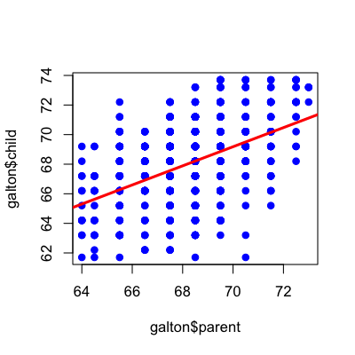
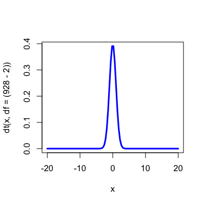
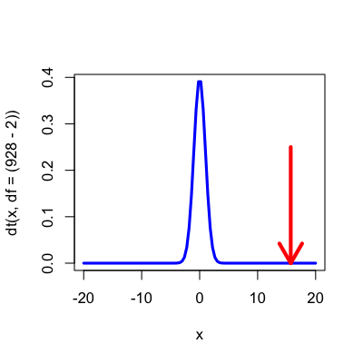
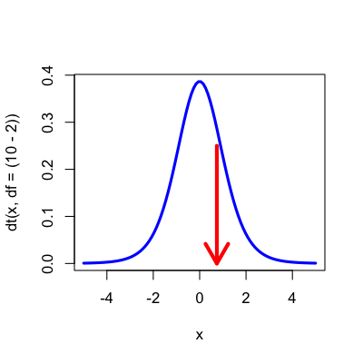
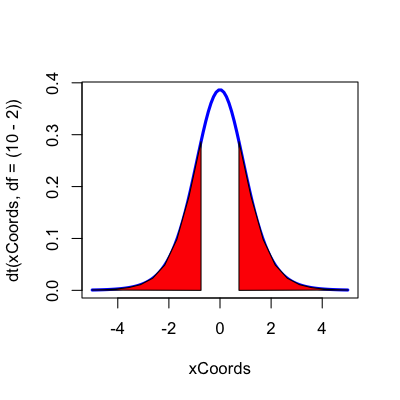
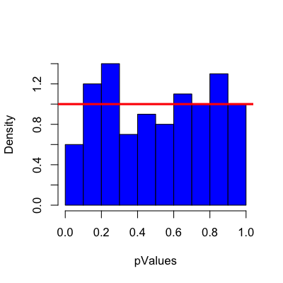
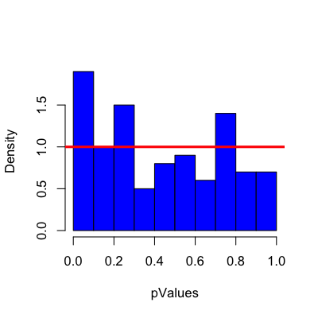
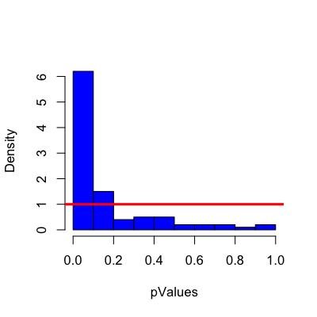

- Most common measure of "statistical significance"
- Commonly reported in papers
- Used for decision making (e.g. FDA)
- Controversial among statisticians
P-values
Jeffrey Leek, Assistant Professor of Biostatistics
Johns Hopkins Bloomberg School of Public Health
P-values
Not everyone thinks P-values are awful

http://simplystatistics.org/2012/01/06/p-values-and-hypothesis-testing-get-a-bad-rap-but-we/
What is a P-value?
Idea: Suppose nothing is going on - how unusual is it to see the estimate we got?
Approach:
- Define the hypothetical distribution of a data summary (statistic) when "nothing is going on" (null hypothesis)
- Calculate the summary/statistic with the data we have (test statistic)
- Compare what we calculated to our hypothetical distribution and see if the value is "extreme" (p-value)
Galton data
library(UsingR); data(galton)
plot(galton$parent,galton$child,pch=19,col="blue")
lm1 <- lm(galton$child ~ galton$parent)
abline(lm1,col="red",lwd=3)

If there was no relation between mid-parent/child height would we be surprised to see a line that looks like this?
Null hypothesis/distribution
\[\frac{\hat{b}_1 - b_1}{S.E.(\hat{b}_1)} \sim t_{n-2}\]
\(H_0\): That there is no relationship between parent and child height (\(b_1=0\)). Under the null hypothesis the distribution is:
\[\frac{\hat{b}_1}{S.E.(\hat{b}_1)} \sim t_{n-2}\]
Null distribution
x <- seq(-20,20,length=100)
plot(x,dt(x,df=(928-2)),col="blue",lwd=3,type="l")

Null distribution + observed statistic
x <- seq(-20,20,length=100)
plot(x,dt(x,df=(928-2)),col="blue",lwd=3,type="l")
arrows(summary(lm1)$coeff[2,3],0.25,summary(lm1)$coeff[2,3],0,col="red",lwd=4)

Calculating p-values
summary(lm1)
Call:
lm(formula = galton$child ~ galton$parent)
Residuals:
Min 1Q Median 3Q Max
-7.805 -1.366 0.049 1.634 5.926
Coefficients:
Estimate Std. Error t value Pr(>|t|)
(Intercept) 23.9415 2.8109 8.52 <2e-16 ***
galton$parent 0.6463 0.0411 15.71 <2e-16 ***
---
Signif. codes: 0 '***' 0.001 '**' 0.01 '*' 0.05 '.' 0.1 ' ' 1
Residual standard error: 2.24 on 926 degrees of freedom
Multiple R-squared: 0.21, Adjusted R-squared: 0.21
F-statistic: 247 on 1 and 926 DF, p-value: <2e-16
A quick simulated example
set.seed(9898324)
yValues <- rnorm(10); xValues <- rnorm(10)
lm2 <- lm(yValues ~ xValues)
summary(lm2)
Call:
lm(formula = yValues ~ xValues)
Residuals:
Min 1Q Median 3Q Max
-1.546 -0.570 0.136 0.771 1.052
Coefficients:
Estimate Std. Error t value Pr(>|t|)
(Intercept) 0.310 0.351 0.88 0.40
xValues 0.289 0.389 0.74 0.48
Residual standard error: 0.989 on 8 degrees of freedom
Multiple R-squared: 0.0644, Adjusted R-squared: -0.0525
F-statistic: 0.551 on 1 and 8 DF, p-value: 0.479
A quick simulated example
x <- seq(-5,5,length=100)
plot(x,dt(x,df=(10-2)),col="blue",lwd=3,type="l")
arrows(summary(lm2)$coeff[2,3],0.25,summary(lm2)$coeff[2,3],0,col="red",lwd=4)

A quick simulated example
xCoords <- seq(-5,5,length=100)
plot(xCoords,dt(xCoords,df=(10-2)),col="blue",lwd=3,type="l")
xSequence <- c(seq(summary(lm2)$coeff[2,3],5,length=10),summary(lm2)$coeff[2,3])
ySequence <- c(dt(seq(summary(lm2)$coeff[2,3],5,length=10),df=8),0)
polygon(xSequence,ySequence,col="red"); polygon(-xSequence,ySequence,col="red")

Simulate a ton of data sets with no signal
set.seed(8323); pValues <- rep(NA,100)
for(i in 1:100){
xValues <- rnorm(20);yValues <- rnorm(20)
pValues[i] <- summary(lm(yValues ~ xValues))$coeff[2,4]
}
hist(pValues,col="blue",main="",freq=F)
abline(h=1,col="red",lwd=3)

Simulate a ton of data sets with signal
set.seed(8323); pValues <- rep(NA,100)
for(i in 1:100){
xValues <- rnorm(20);yValues <- 0.2 * xValues + rnorm(20)
pValues[i] <- summary(lm(yValues ~ xValues))$coeff[2,4]
}
hist(pValues,col="blue",main="",freq=F,xlim=c(0,1)); abline(h=1,col="red",lwd=3)

Simulate a ton of data sets with signal
set.seed(8323); pValues <- rep(NA,100)
for(i in 1:100){
xValues <- rnorm(100);yValues <- 0.2* xValues + rnorm(100)
pValues[i] <- summary(lm(yValues ~ xValues))$coeff[2,4]
}
hist(pValues,col="blue",main="",freq=F,xlim=c(0,1)); abline(h=1,col="red",lwd=3)

Some typical values (single test)
- P < 0.05 (significant)
- P < 0.01 (strongly significant)
- P < 0.001 (very significant)
In modern analyses, people generally report both the confidence interval and P-value. This is less true if many many hypotheses are tested.
How you interpret the results
summary(lm(galton$child ~ galton$parent))$coeff
Estimate Std. Error t value Pr(>|t|)
(Intercept) 23.9415 2.81088 8.517 6.537e-17
galton$parent 0.6463 0.04114 15.711 1.733e-49
A one inch increase in parental height is associated with a 0.77 inch increase in child's height (95% CI: 0.42-1.12 inches). This difference was statistically significant (\(P < 0.001\)).
Be careful!

Be careful!